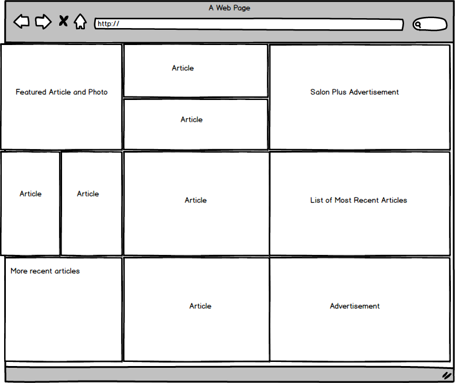
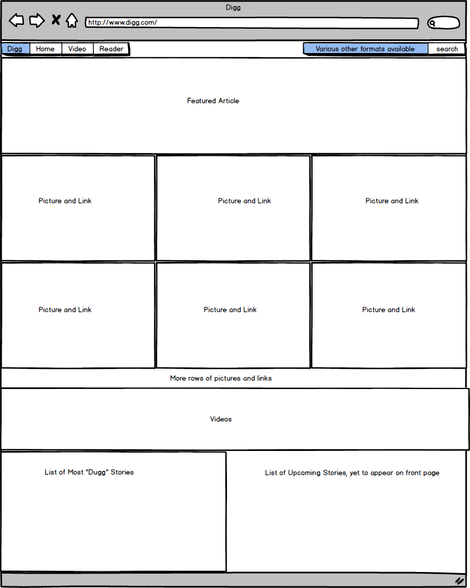
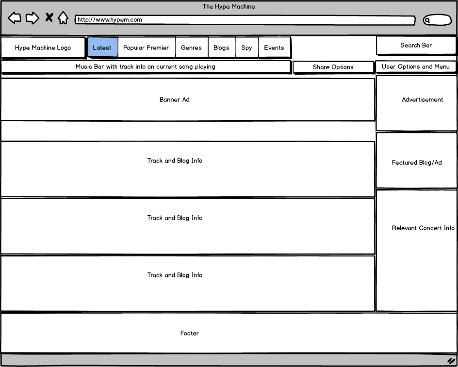

Slate aims to provide insightful commentary on current events, pop culture, and sports. Slate aims to be 21st century equivalent of the 20th century magazine. In terms of design, Slate aims to be the go-to online news magazine for a wide range of devices and hence needs to be easy to navigate on everything from a desktop computer, tablet to an iphone.
Digg has very similar aims to Slate, although its history as a Reddit-like website, gives it a slightly different approach. Digg is still a content aggregator at heart and hence focused on presenting external content in an interesting and appealing way. Hence, Digg has a relatively simple and predictable visual three-column layout. Digg still has some vestiges of its previous incarnation as a reddit-like site However, tellingly, the "most dugg" feature is only found at the very bottom of the front page.
Hype Machine is much different than both Slate and Digg. Hype Machine provides a fun and easy way to discover new music and music blogs using the internet. In order to do that, Hype Machine provides wide variety of aggregate information concerning the online music blog landscape. In terms of visual challenges, Hype Machine grapples with presenting the sheer number and variety of music uploaded each day in a meaningful way. Hence, it provides many easy options for organizing music tracks using a variety of filters, whether by popularity, date, genre, or blog.
